Aktuálna ponuka
Nehnuteľnosti, ktoré ponúkam
24 nehnuteľností na predaj a prenájom. Vyberte typ, alebo napíšte lokalitu.
24 z 24 ponúk
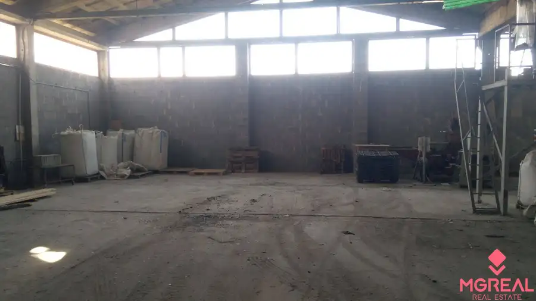
Nebytové priestory4 3 500 €Prenájom prevádzkovo skladových priestorov v Dolnej Krupej s dobrým na Dolná Krupá 1700 m²1. podlažie Ponúkame Vám na prenájom skladové a prevádzkové priestory v obci Dolná Krupá neďaleko Trnavy. Celková výmera priestorov 1700 m2. Skladový priestor sa…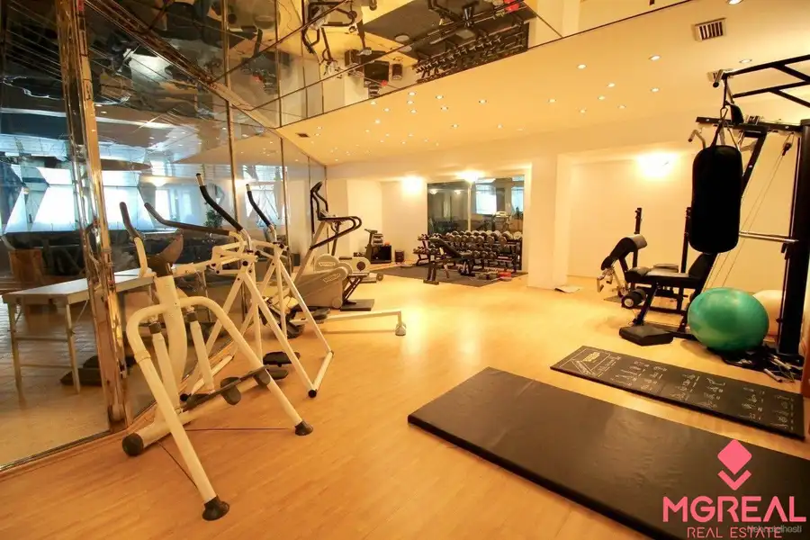
Hotely a penzióny4 Cena dohodouPrenájom relaxačného centra s fitnes v Ružinove. Ružinov, Bratislava-Ružinov 250 m²2. podlažie Ponúkame Vám na prenájom vybavený priestor s 2 saunami, bazénom, vírivkou, a zariadeným fitnes centrom. Priestor má kompletné zázemie, šatne, WC,…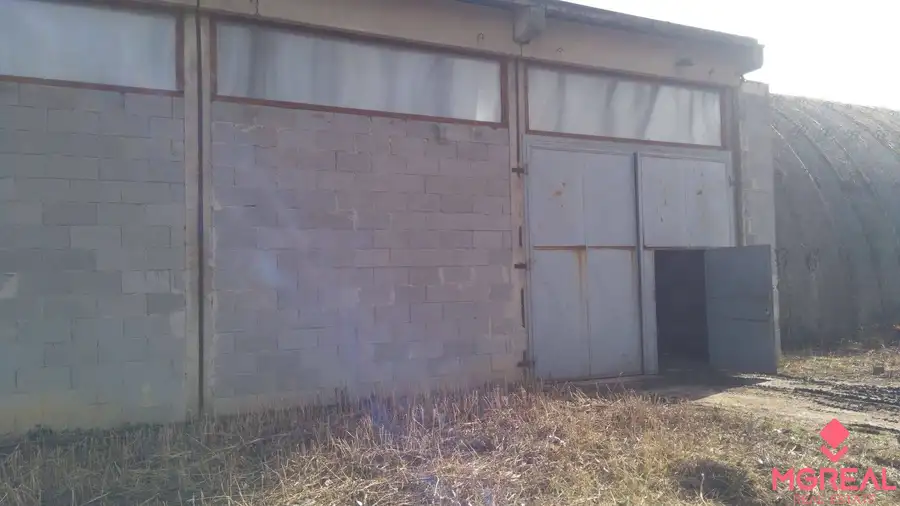
Nebytové priestory10 490 000 €Predaj výrobno skladových priestorov v Dolnej Krupej Dolná Krupá 1700 m² Ponúkame Vám na predaj výrobno skladové priestory 1700 m2 a prislúchajúci pozemok o výmere 11000 m2 v Dolnej Krupej. Výrobno skladové priestory sa…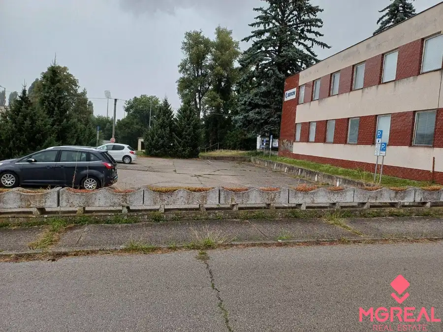
Nebytové priestory7 Cena dohodouPredaj administratívnej budovy 878 m2 v Senici Senica 878 m²2. podlažie Ponúkame Vám na predaj ( prenájom) dvojpodlažnú administratívnu budovu, ktorá sa nachádza vo vstupnej časti výrobno - skladového areálu spoločnosti…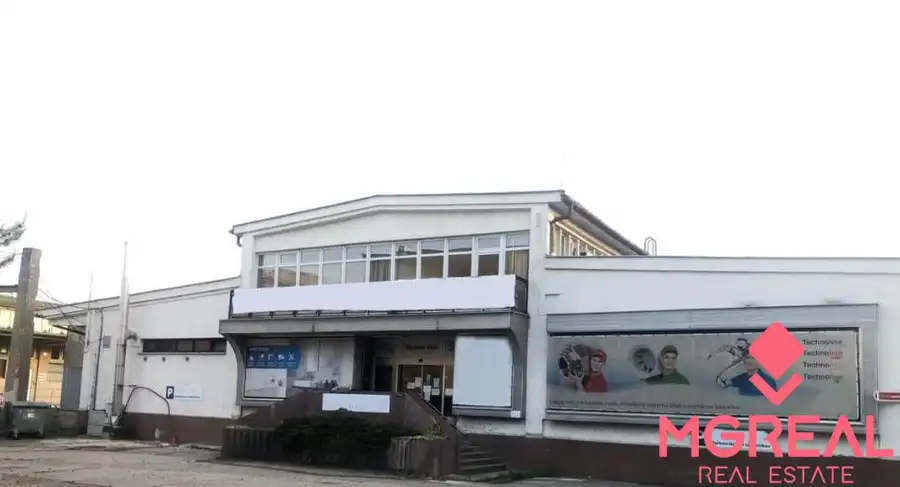
Nebytové priestory5 Cena dohodouPrenájom skladových priestorov od 100 m2 do 3000 m2 v Bratislave - Rač Rača, Bratislava-Rača 3000 m²1. podlažie Ponúkame Vám na prenájom skladovacie priestory od výmery 100 m2 do 3000 m2. Tieto priestory možno vykurovať, dostupné sú cez nákladné rampy. Možnosť…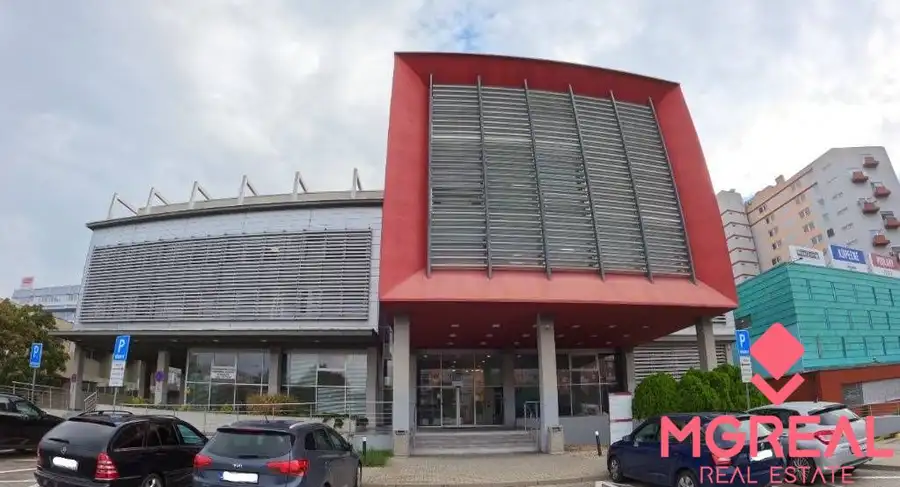
Nebytové priestory9 Cena dohodouPrenájom kancelárskych na Bajkalskej ulici. Ružinov, Bratislava-Ružinov 300 m²2. podlažie Ponúkame Vám na prenájom kancelárske priestory nachádzajúce sa v dvojpodlažnej administratívnej budove v Bratislave-Ružinove. Na poschodí kancelárie…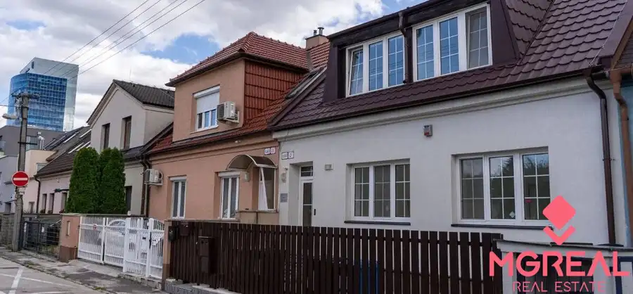
Nebytové priestory9 Cena dohodouPrenájom kancelárskych priestorov v blízkosti OC VIVO Nové Mesto, Bratislava-Nové Mesto 271 m²1. podlažie Ponúkame Vám na prenájom kancelárske priestory v rodinnom dome o výmere 271 m2. V objekte sa nachádza: 9x kancelária, 3 x WC so sprchou, 2 x…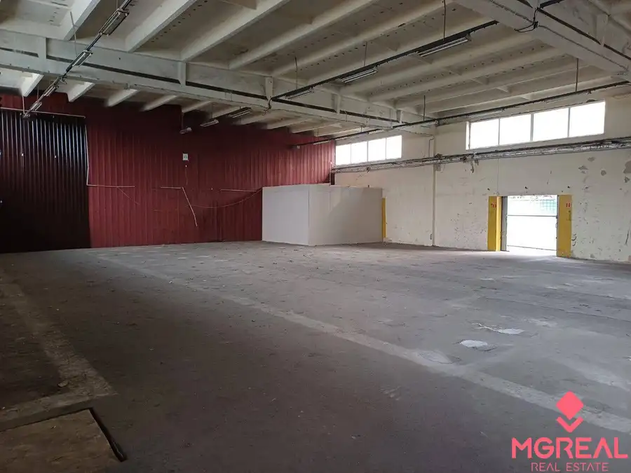
Nebytové priestory3 Cena dohodouPrenájom vykurovaného skladového priestoru 586 m2 v Ružinove Ružinov, Bratislava-Ružinov 586 m² Ponúkame Vám na prenájom skladové priestory v širšom centre Bratislavy o celkovej výmere 586 m2 s dobrým napojením na diaľnicu. Výška stropu 5,40 m.…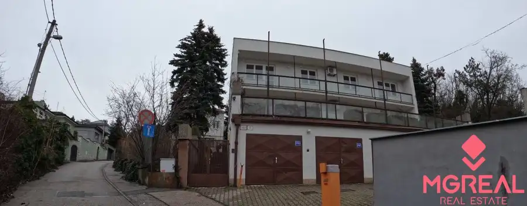
Nebytové priestory10 Cena dohodouPrenájom kancelárskych priestorov 220 m2 v Starom Meste aj s parkovaní Staré Mesto, Bratislava-Staré Mesto 312 m²1. podlažie Ponúkame Vám na dlhodobý prenájom administratívnu budovu na ulici Kráľovské údolie, Bratislava-Staré Mesto. Nehnuteľnosť je situovaná v tichej…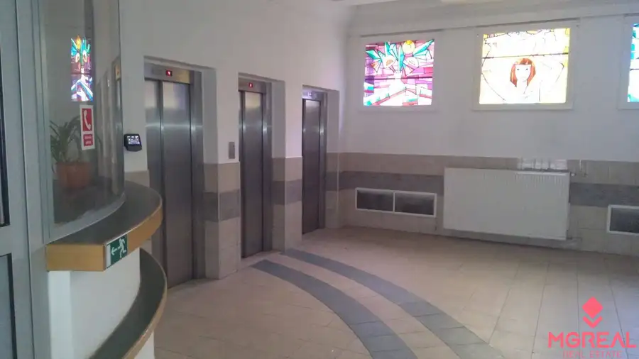
Nebytové priestory9 Cena dohodouPrenájom kancelárskych priestorov 200 m2 na Odborárskom námestí. Staré Mesto, Bratislava-Staré Mesto 200 m²1. podlažie Ponúkame Vám na prenájom kancelárske priestory v Bratislave, v časti Staré Mesto. Voľné kancelárie o výmere od 14 m2 do 30 m2 sa nachádzajú na 1.p.…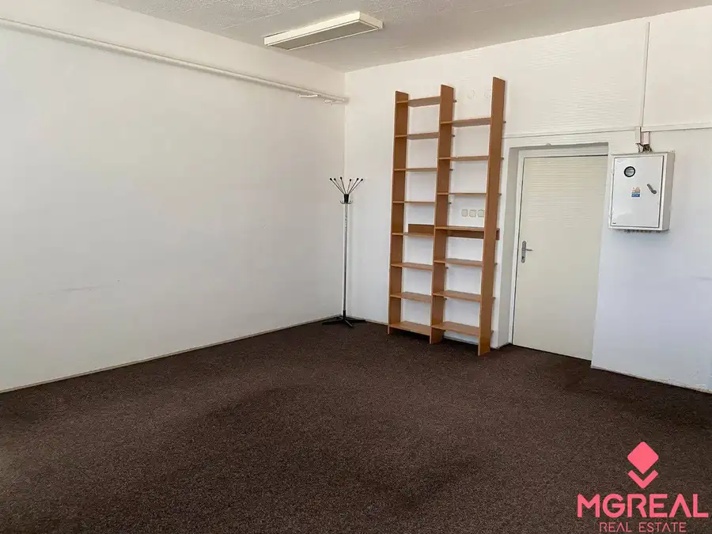
Nebytové priestory5 Cena dohodouPrenájom kancelárskych priestorov do 600 m2 v Senici Senica 600 m²3. podlažie Ponúkame Vám na prenájom kancelárske priestory od 16 do 600 m2 nachádzajúce sa v areály spoločnosti SEKOV Senica. Priestory sa prenajímajú bez…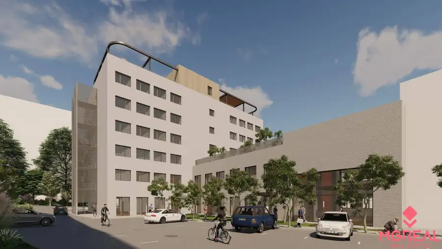
Nebytové priestory5 Cena dohodouPrenájom kancelárií od 15 m2 na Sliačskej ulici. Nové Mesto, Bratislava-Nové Mesto 3111 m²5. podlažie Ponúkame Vám na prenájom kancelárske priestory nachádzajúce sa v 5. podlažnej administratívnej budove, Bratislava - Nové Mesto. Kancelárie sú od…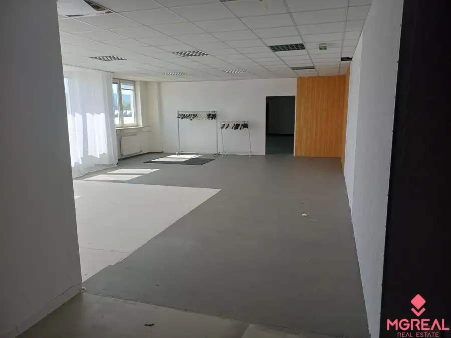
Nebytové priestory10 Cena dohodouPrenájom kancelárskych a skladových priestorov pri Zlatých pieskoch. Ružinov, Bratislava-Ružinov 15 m² Ponúkame Vám na prenájom kancelárie od výmery 15 až 75 m2 v administratívnej budove na ulici Krajná v Bratislave-Ružinove. Voľné kancelárie sa…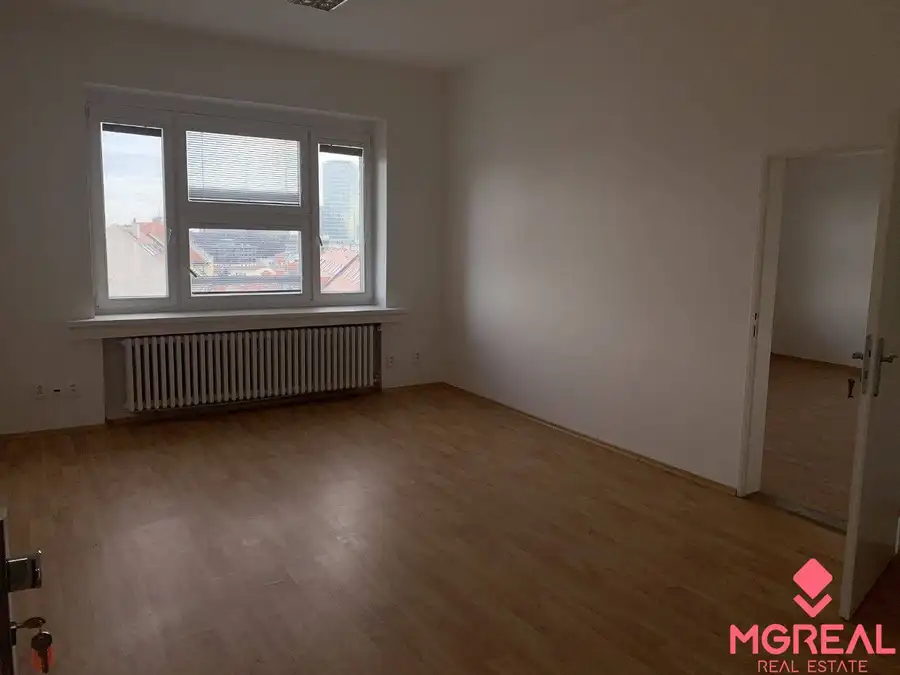
Nebytové priestory6 Cena dohodouPrenájom kancelárií 200 m2 na Štefánikovej ulici v Bratislave - Starom Staré Mesto, Bratislava-Staré Mesto 200 m²5. podlažie Ponúkame Vám na prenájom kancelárske priestory neďaleko hlavnej železničnej stanice. Kancelárie sú od 25 m2. Kuchynka a WC v spoločných priestoroch.…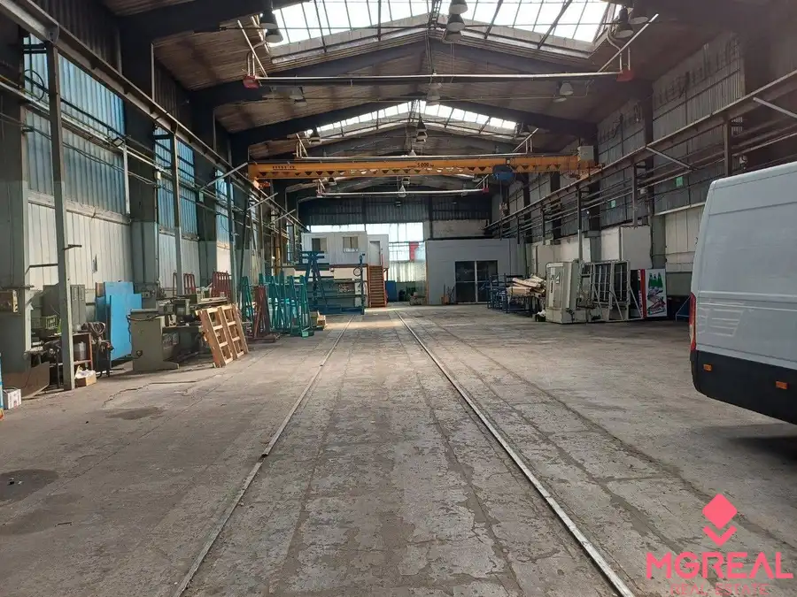
Nebytové priestory4 Cena dohodouPrenájom výrobno - skladových priestorov 1100 m2 v Senici Senica 1100 m² V areály spoločnosti SEKOV ponúkame na prenájom výrobno - skladové priestory so zázemím. Objekt má 2 vstupné brány s výškou 4 m. V hale sa nachádza…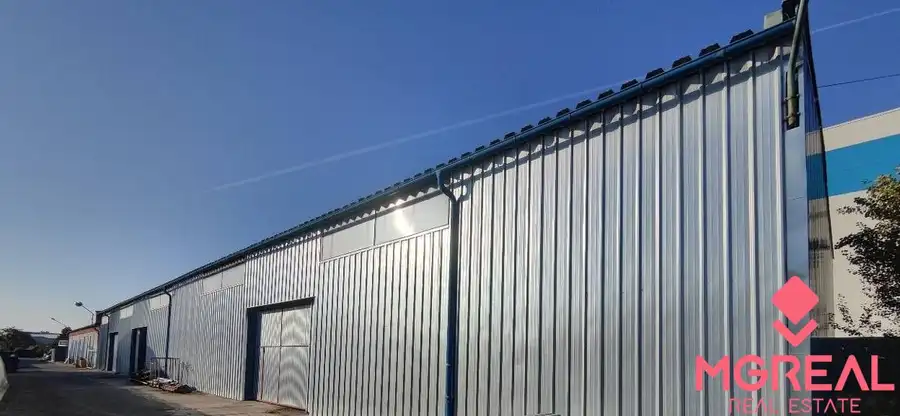
Nebytové priestory5 Cena dohodouPrenájom skladových priestorov 320 m2 v Rači Rača, Bratislava-Rača 320 m² Ponúkame Vám na prenájom skladové priestory v Žabom majery o celkovej výmere 320 m2 so samostatným uzamykateľným vstupom. Areál skladu je oplotený,…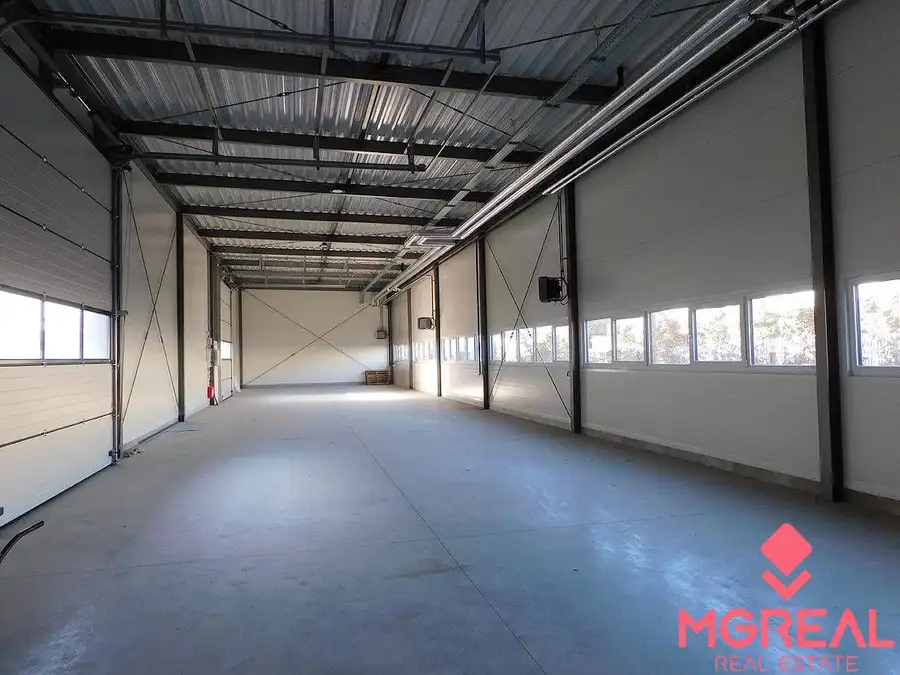
Nebytové priestory4 Cena dohodouPrenájom 140 m² obchodno-skladových priestorov v Trnave Trnava 140 m² Ponúkame na prenájom obchodno-skladovú halu s úžitkovou plochou 140 m² . Priestory sa nachádzajú v lokalite s rýchlym napojením na diaľnicu…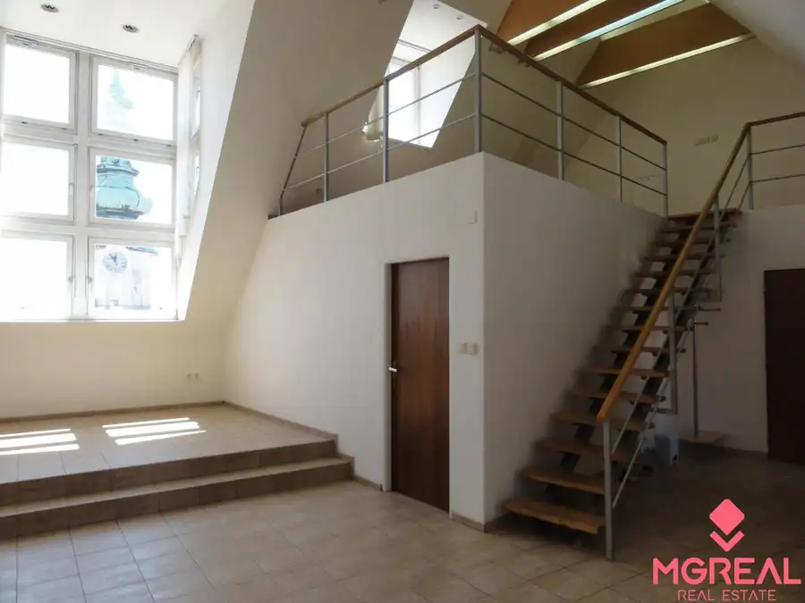
Nebytové priestory6 Cena dohodouKancelárske priestory 82 m2 s atraktívnym výhľadom v centre Bratislavy Staré Mesto, Bratislava-Staré Mesto 82 m²4. podlažie Ponúkame Vám na prenájom podkrovné kancelárske priestory nachádzajúce sa na 4.p. budovy v Bratislave - Staré mesto s výhľadom na Michalskú vežu a dóm…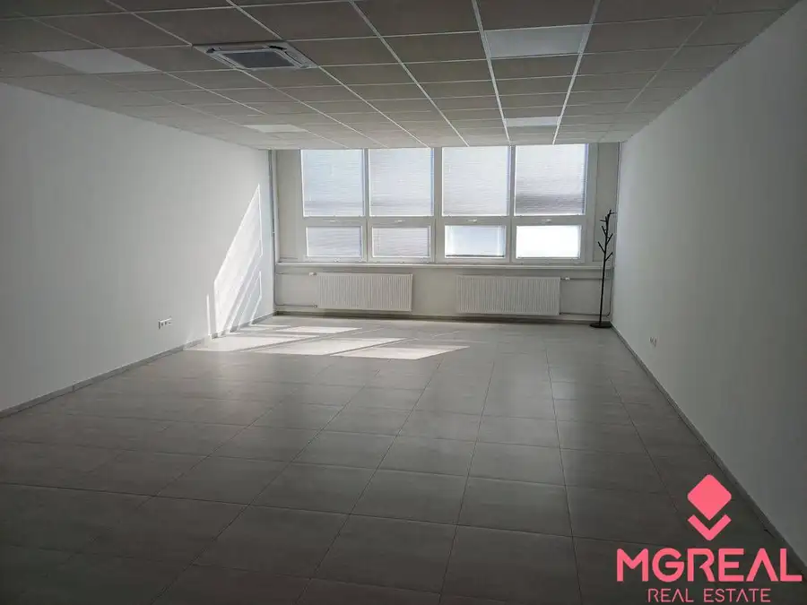
Nebytové priestory4 Cena dohodouPrenájom priestorov 58 m2 a 60 m2 v priemyselnej zóne Trnavy Trnava 118 m² Ponúkame na prenájom 2 klimatizované nebytové priestory na Priemyselnej ulici v Trnave nachádzajúce sa na prízemí administratívnej budovy s možnosťou…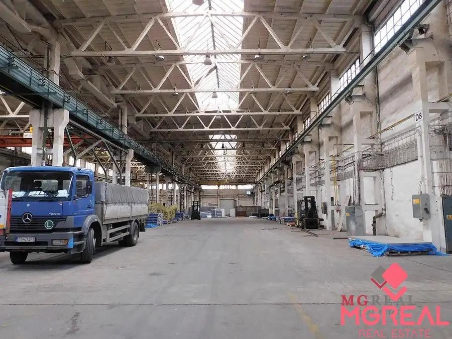
Nebytové priestory7 Cena dohodouNa prenájom 1700 m2 výrobno-skladové priestory v Trnave Trnava 1700 m² Ponúkame na prenájom výrobno skladové priestory v Trnave, ktoré možno prispôsobiť podľa požiadaviek klienta. Úžitková šírka skladu je 18 m, výška…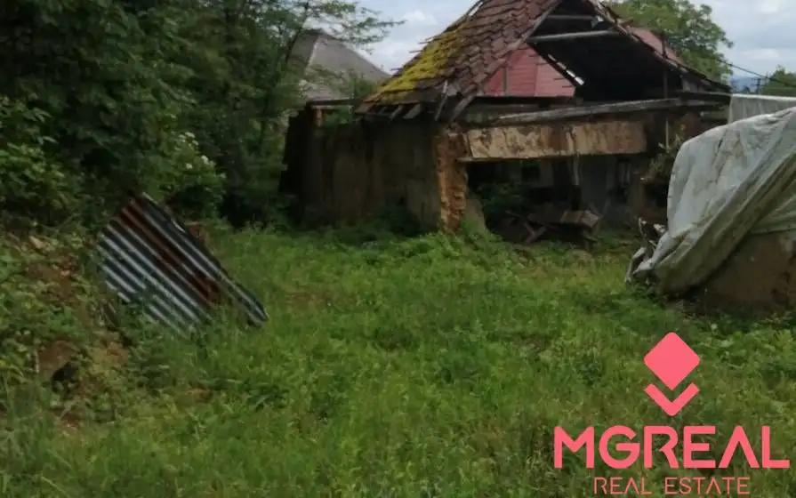
Pozemok6 37 000 €Predaj pozemku 740 m2 na myjavských kopaniciach. Jablonka 740 m² Ponúkame Vám na predaj mierne svahovitý pozemok na stavbu chaty, chalupy, alebo aj rodinného domu v Jablonke, časti Ušiaci. Na pozemku sa nachádza…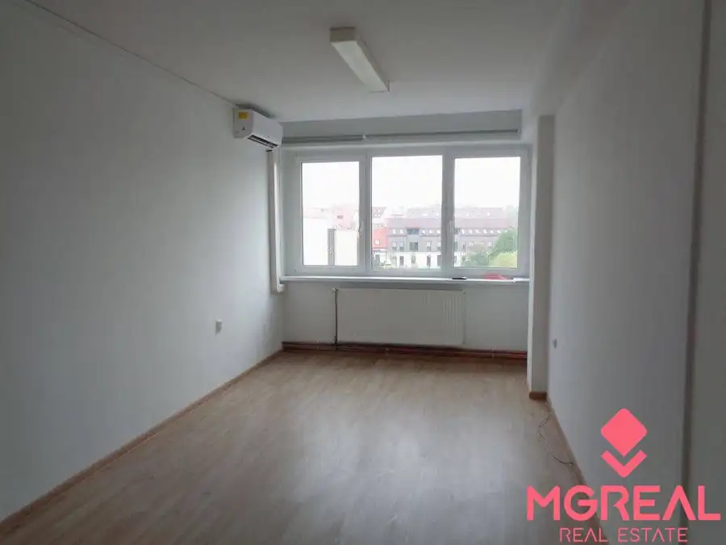
Nebytové priestory7 2 100 €Prenájom obchod. priestoru 165 m2 a kanc. pri City aréne v Trnave Trnava 90 m²1. podlažie Ponúkame na prenájom obchodný priestor v centre Trnavy. Nachádza sa na prízemí administratívnej budovy, je klimatizovaný - teplotu možno nastaviť…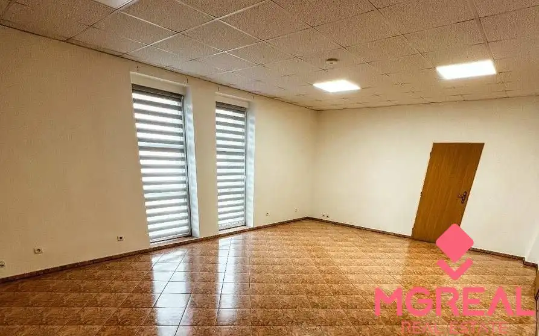
Nebytové priestory5 Cena dohodouPrenájom kancelárií 36 m2 a 40 m2 v širšom centre Trnavy Trnava 128 m²2. podlažie Ponúkame Vám na prenájom klimatizované kancelárie na Sladovníckej ulici. Kancelárie sa nachádzajú na 1.p. administratívnej budovy a sú navzájom…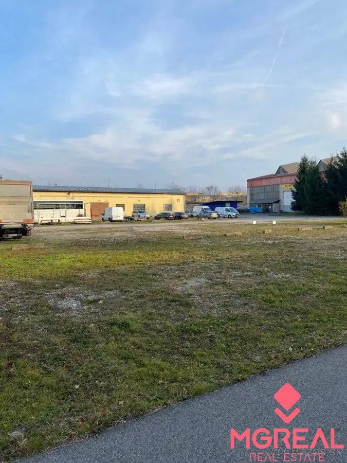
Pozemok Cena dohodouPrenájom parkovacích miest pre kamióny v Senici Senica 600 m² Ponúkame Vám na prenájom spevnené štrkové plochy v areály spoločnosti SEKOV Senica, vhodné na parkovanie kamiónov, návesov, autobusov a po dohode aj…Tomuto výberu zatiaľ nezodpovedá žiadna ponuka. Napíšte mi, čo hľadáte.